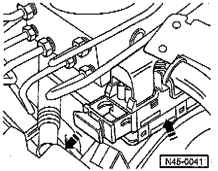

Control Unit
ABS, ABS/EDL Components:

Component Notes And Information
NOTE: During Service procedures, refer to the illustration above and the notes below.
CAUTION: The ABS hydraulic pump and valve block must not be separated from one another.
1 Brake servo (vacuum brake booster)
2 Brake master cylinder
- With seal
3 Brake fluid reservoir
4 Cap
5 Self-locking nut
- Always replace.
- Tighten to: 25 Nm (18 ft lb).
6 Torx socket-head bolt
- T25
- Tighten to: 4 Nm (35 inch lb).
7 Torx socket-head bolt
- T25
- Tighten to: 8 Nm (71 inch lb).
8 Grommet
9 Retainer
10 ABS hydraulic unit
11 ABS control module
12 Brake line connection
- ABS hydraulic unit to right-front brake caliper
13 Brake line connection
- ABS hydraulic unit to left-rear brake caliper/wheel cylinder
14 Brake line connection
- ABS hydraulic unit to right-rear brake caliper/wheel cylinder
15 Brake line connection
- ABS hydraulic unit to left-front brake caliper
16 Brake line
- Brake master cylinder (secondary piston circuit) to ABS hydraulic unit
17 Brake line
- Brake master cylinder (primary piston circuit) to ABS hydraulic unit
Procedures
CAUTION:
^ Determine correct radio anti-theft coding before disconnecting the battery.
^ Only remove the sealing plugs on the ABS hydraulic unit just before the particular brake line is to be installed.
^ If the sealing plugs are removed too soon, brake fluid can escape and it can then no longer be guaranteed that the unit is sufficiently filled or adequately bled.
^ There must not be anything in the area of the ABS control module that can contaminate the valve block.
^ Do not bend the brake lines at or near the ABS hydraulic unit.
^ Switch ignition OFF when disconnecting and reconnecting the ABS control module connector.

^ After separating the ABS control module from the ABS hydraulic unit, always install the valve dome transportation protection on the hydraulic unit.
- Sealing plug kit
1. Valve dome transportation protection (plastic foam)
2. Sealing plugs (10mm)
3. Sealing plugs (12mm)
Removal
1. Disconnect battery.
2. Remove coolant expansion tank and swing to one side.
Disconnecting ABS Electrical Connector:

3. Disconnect harness connector from ABS control module.
4. Disconnect, remove and position aside components necessary to allow clearance for booster removal.
5. Disconnect booster rod from brake pedal, refer to Brake Pedal Disconnect or Replace. Service and Repair
6. Remove nuts retaining booster to engine bulkhead, then booster from engine compartment.
Installation
Installation is the reverse of removal, noting the following information:
^ If the hydraulic system was opened, bleed brake system. Service and Repair
^ For vehicles with ABS/EDL, if the brake fluid reservoir has been completely empty (e.g. leaks in brake system) it is necessary to initiate the "Basic Setting" function of the On Board Diagnostic (OBD) program.
^ Otherwise the standard brake bleeding procedures apply.